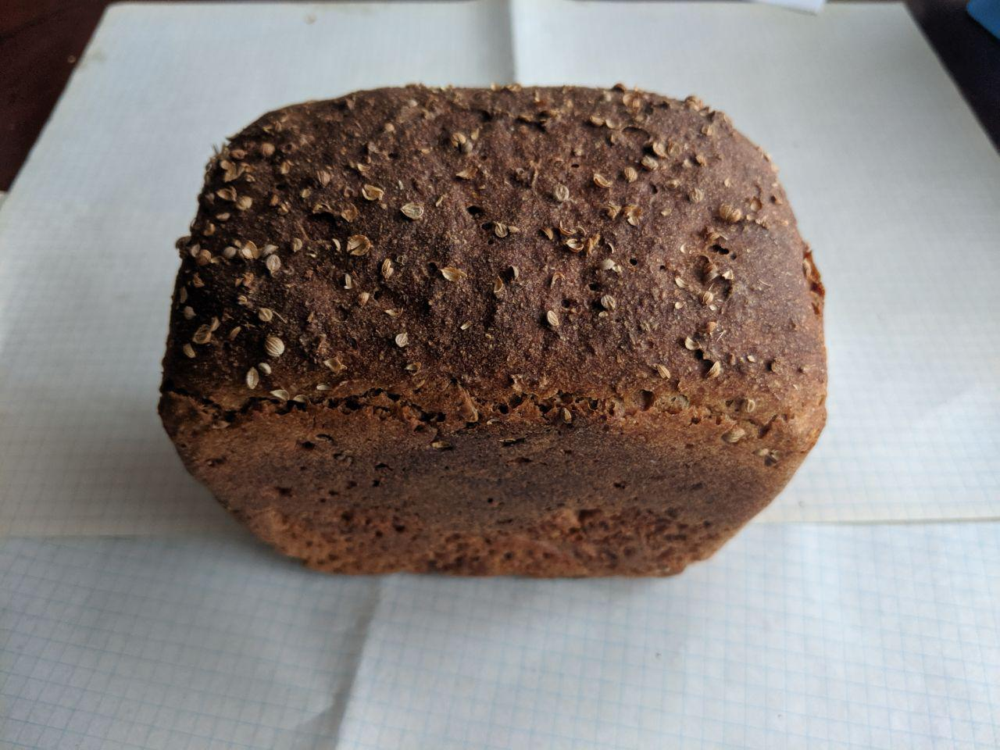
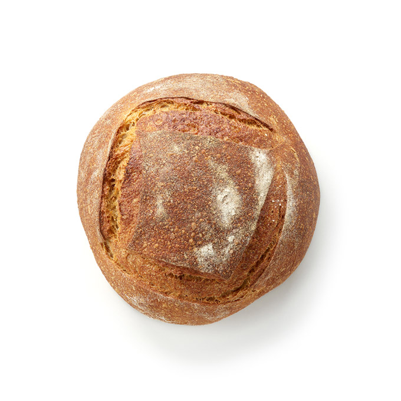
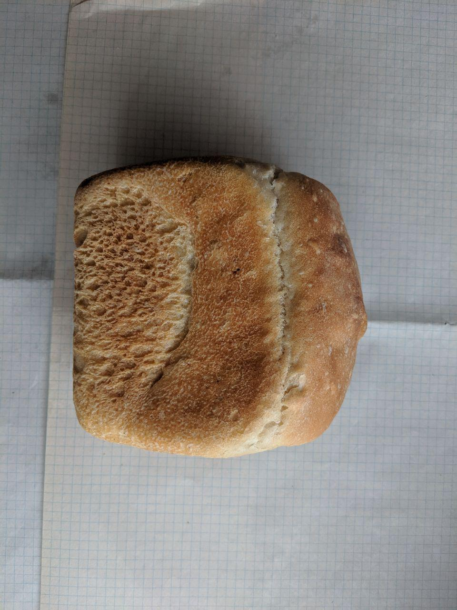
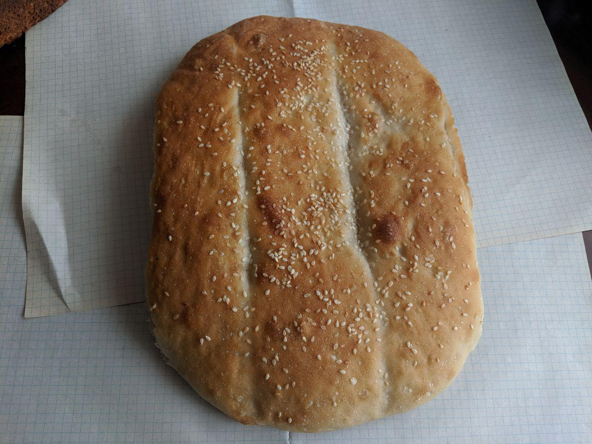

Хлеба из натуральных ингредиентов,
без улучшителей и консервантов

Хлеб "Ржаной край" на закваске
Состав: мука ржаная, мука обдирная, закваска, вода, солод ячменный, соль пищевая йодированная
Срок годности: 72 часа
Сертификат: СТБ-639
Масса: 350 г
Цена: 090 р
Хлеб "Ржаной край" зерновой на закваске
Состав: мука ржаная, мука обдирная, закваска, вода, семена тыквы, семена льна, семена подсолнечника, кунжут,
солод ячменный, соль пищевая йодированная, кориандр
Срок годности: 72 часа
Сертификат: СТБ-639
Масса: 350 г
Цена: 105 р


Хлеб из пшеничной муки формовой
Состав: мука высшего и первого сортов, вода, дрожжи, соль пищевая йодированная
Срок годности: 72 часа
Сертификат: СТБ-1009
Масса: 350 г
Цена: 085 р
Хлеб из пшеничной муки "Матнакаш"
Состав: мука высшего и первого сортов, закваска, вода, соль пищевая йодированная, кунжут
Срок годности: 72 часа
Сертификат: СТБ-1009
Масса: 400 г
Цена: 110 р

Адрес производства: Республика Беларусь, Витебская обл., г. Полоцк, ул. Космонавтов, д. 120А
Телефон: +37529 123-99-99
e-mail: babik123@yandex.ru